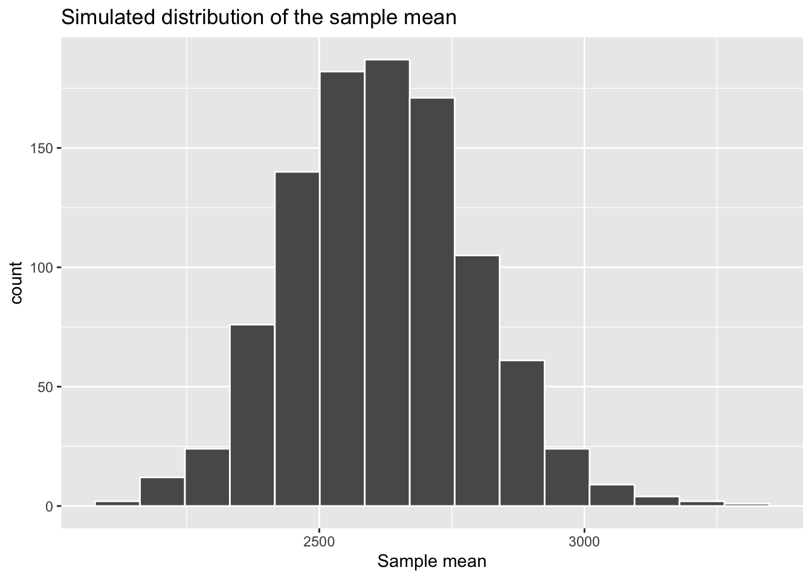
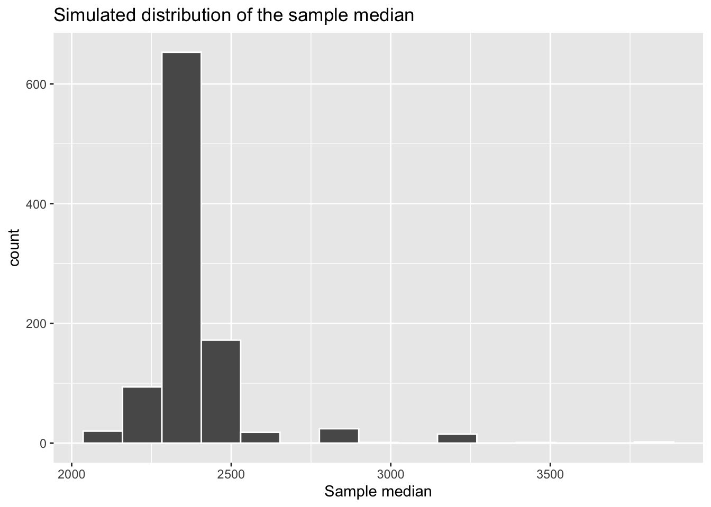
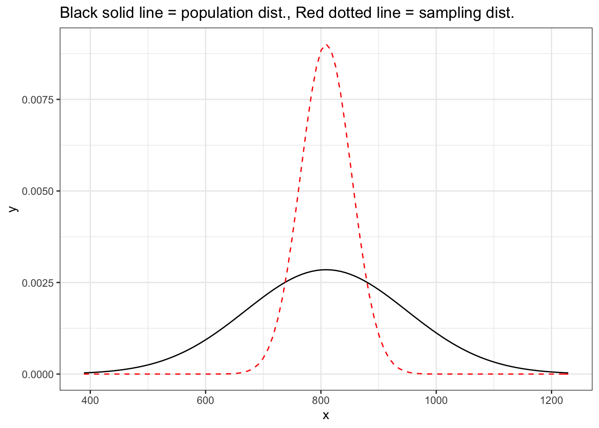

library(tidyverse)
library(tidymodels)Central limit theorem
STA 199
Bulletin
- this
aeis due for grade. Push your completed ae to GitHub within 48 hours to receive credit - project proposal feedback
- homework 4 due date updated
Getting started
Clone your ae19-username repo from the GitHub organization.
Today
By the end of today you will…
- Use Central Limit Theorem to define distribution of sample means
- Calculate probabilities from the normal distribution
- Use Central Limit Theorem (CLT) to conduct inference on a population mean
Load packages
Load data
manhattan = read_csv(
"https://sta101-fa22.netlify.app/static/appex/data/manhattan.csv"
)Notes
How do we know when to expect a normal distribution to show up?
Looking at the data from last time, we can see an example where the distribution of sample means looked approximately normal but the distribution of sample medians does not.
Example:
set.seed(1)
boot_dist = manhattan %>%
specify(response = rent) %>%
generate(reps = 1000, type = "bootstrap")
boot_dist %>%
calculate(stat = "mean") %>%
visualize() +
labs(x = "Sample mean",
title = "Simulated distribution of the sample mean")
boot_dist %>%
calculate(stat = "median") %>%
visualize() +
labs(x = "Sample median",
title = "Simulated distribution of the sample median")
Are there times when the sample mean will not look normal?
Demo
The proportion of observed successes for a binary variable is a sample mean.
Scenario: You flip a biased coin numFlips times and compute the sample mean (the proportion of flips that land heads). You repeat this experiment 1000 times and obtain a distribution of sample means.
- How does the shape of the distribution change as you increase the number of coin flips per sample?
set.seed(714)
numFlips = 1
numHeads = rbinom(n = 1000, size = numFlips, prob = 0.9)
df = data.frame(numHeads) # new data frame called df
df %>%
mutate(propHeads = numHeads / numFlips) %>%
ggplot(aes(x = propHeads)) +
geom_histogram(binwidth = .01)
What is the central limit theorem?
The central limit theorem is a statement about the distribution of the sample mean, \(\bar{x}\).
The central limit theorem guarantees that, when certain criteria are satisfied, the sample mean (\(\bar{x}\)) is normally distributed.
Specifically, if
Observations in the sample are independent. Two rules of thumb to check this:
- completely random sampling
- if sampling without replacement, sample should be less than 10% of the population size
and
The sample is large enough. The required size varies in different contexts, but some good rules of thumb are:
- if the population itself is normal, sample size does not matter.
- if numerical require, >30 observations
- if binary outcome, at least 10 successes and 10 failures.
then
\[ \bar{x} \sim N(\mu, \sigma / \sqrt{n}) \]
i.e. \(\bar{x}\) is normally distributed (unimodal and symmetric with bell shape) with mean \(\mu\) and standard deviation \(\sigma / \sqrt{n}\). The standard deviation of the sampling distribution is called the standard error.
Note
The standard deviation of the sample mean depends on the number of samples, \(n\).
Practice using CLT & Normal distribution
Suppose the bone density for 65-year-old women is normally distributed with mean \(809 mg/cm^3\) and standard deviation of \(140 mg/cm^3\).
Let \(x\) be the bone density of 65-year-old women. We can write this distribution of \(x\) in mathematical notation as
\[x \sim N(809, 140)\]
Visualize the population distribution
ggplot(data = data.frame(x = c(809 - 140*3, 809 + 140*3)), aes(x = x)) +
stat_function(fun = dnorm, args = list(mean = 809, sd = 140),
color = "black") +
stat_function(fun = dnorm, args = list(mean = 809, sd = 140/sqrt(10)),
color = "red",lty = 2) + theme_bw() +
labs(title = "Black solid line = population dist., Red dotted line = sampling dist.")
Exercise 1
Before typing any code, based on what you know about the normal distribution, what do you expect the median bone density to be?
What bone densities correspond to \(Q_1\) (25th percentile), \(Q_2\) (50th percentile), and \(Q_3\) (the 75th percentile) of this distribution? Use the qnorm() function to calculate these values.
Exercise 2
The densities of three woods are below:
Plywood: 540 mg/cubic centimeter
Pine: 600 mg/cubic centimeter
Mahogany: 710 mg/cubic centimeter
What is the probability that a randomly selected 65-year-old woman has bones less dense than Pine?
Would you be surprised if a randomly selected 65-year-old woman had bone density less than Mahogany? What if she had bone density less than Plywood? Use the respective probabilities to support your response.
Exercise 3
Suppose you want to analyze the mean bone density for a group of 10 randomly selected 65-year-old women.
Are the conditions for the Central Limit Theorem met?
- Independence?
- Sample size/distribution?
What is the shape, center, and spread of the distribution of \(\bar{x}\), the mean bone density for a group of 10 randomly selected 65-year-old women?
Write the distribution of \(\bar{x}\) using mathematical notation.
Exercise 4
What is the probability that the mean bone density for the group of 10 randomly-selected 65-year-old women is less dense than Pine?
Would you be surprised if a group of 10 randomly-selected 65-year old women had a mean bone density less than Mahogany? What the group had a mean bone density less than Plywood? Use the respective probabilities to support your response.
Exercise 5
Explain how your answers differ in Exercises 3 and 5.
Extra practice (on your own)
Suppose the distribution of the number of minutes users engage with apps on an iPad has a mean of 8.2 minutes and standard deviation of 1 minute. Let \(x\) be the number of minutes users engage with apps on an iPad, \(\mu\) be the population mean and \(\sigma\) the population standard deviation. Then,
\[x \sim N(8.2, 1)\]
Suppose you take a sample of 60 randomly selected app users and calculate the mean number of minutes they engage with apps on an iPad, \(\bar{x}\). The conditions (independence & sample size/distribution) to apply the Central Limit Theorem are met. Then by the Central Limit Theorem
\[\bar{x} \sim N(8.2, 1/\sqrt{60})\]
What is the probability a randomly selected user engages with iPad apps for more than 8.3 minutes? Use
pnormfor calculations.#add codeWhat is the probability the mean minutes of app engagement for a group of 60 randomly selected iPad users is more than 8.3 minutes? Use
pnormfor calculations.#add codeWhat is the probability the mean minutes of app engagement for a group of 60 randomly selected iPad users is between 8.3 and 8.4 minutes? Use
pnormfor calculations.
#add code